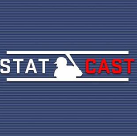
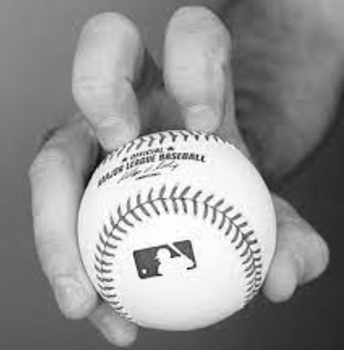
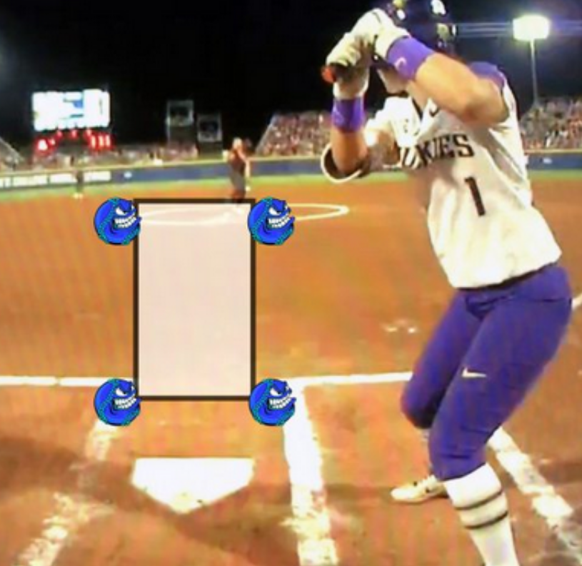

Evaluating Pitchers Using Advanced Stats
DATASCI 209, Winter 2024 - Maryam Feizabad, Jonah Grossman, Jun Park, Chris Erickson
Understanding MLB Statcast Data
A Guide to Baseball Analytics and Pitching Basics
What is MLB Statcast?
Statcast is a revolutionary tracking technology implemented by Major League Baseball (MLB) that captures high-resolution data for every play on the field. Introduced in 2015, Statcast leverages cameras and radar to measure a vast array of metrics—everything from the speed and spin of a baseball to the exact positioning and reaction times of players on the field. This dataset is now a fundamental tool for teams, coaches, scouts, and analysts who aim to evaluate player performance with a high degree of detail and accuracy.

Key Metrics in Statcast Data
Statcast provides a wide variety of data points that help break down a player's on-field actions. Some commonly analyzed metrics include:
- Exit Velocity: The speed of the ball as it comes off the bat, giving insights into the strength and power of a hitter.
- Launch Angle: The angle at which the ball leaves the bat, crucial for understanding a hitter’s potential for home runs or ground balls.
- Pitch Velocity: The speed of the pitch as it leaves the pitcher’s hand, indicating the pitcher's power and effectiveness.
- Spin Rate: The rate of spin on the ball, which significantly affects pitch movement and effectiveness.
- Pitch Movement: The amount of horizontal or vertical break on a pitch, helping to evaluate the deception and difficulty of the pitch.
How Coaches and Scouts Use Statcast Data
Statcast data has become invaluable in helping coaches and scouts make decisions about player performance, development, and strategy. Here are a few ways it is used:
- Pitch Evaluation: Coaches can analyze metrics like pitch velocity, spin rate, and movement to assess a pitcher’s effectiveness.
- Hitter Analysis: Exit velocity and launch angle allow scouts to evaluate a hitter’s power and contact quality.
- Defensive Positioning: With data on player reaction times and sprint speed, coaches can improve defensive performance.
- Injury Prevention and Conditioning: Tracking metrics like pitch counts and workload helps manage a player's health and minimize injury risk.
The granularity of Statcast data enables teams to go beyond traditional statistics and make player assessments that align with game strategy, player development, and recruitment.
Introduction to Pitching in Baseball
For those new to baseball, pitching is central to both the game’s strategy and excitement. The pitcher plays a crucial role, as their goal is to prevent the opposing team from getting on base and scoring. Here’s an overview of key pitching concepts to help understand this role:

Pitch Types and Characteristics
Different pitches are thrown with varied grips and mechanics to produce unique movement, speed, and deception. Common pitch types include:
- Fastball: A high-speed pitch aimed to challenge batters with its velocity. Types include the four-seam fastball (straight and fast) and the two-seam fastball (slightly slower with more movement).
- Slider: A pitch with a sharp lateral break, intended to move away from or into the batter at the last moment.
- Curveball: Known for its pronounced downward movement, the curveball can deceive hitters due to its drop.
- Changeup: Thrown with a similar motion to a fastball but at a slower speed, meant to disrupt the hitter’s timing.
Key Pitching Metrics and Mechanics
Understanding a few foundational concepts helps illuminate what makes a pitcher effective:
- Velocity: How fast the ball is thrown, often an indicator of a pitcher’s strength. Higher velocities make it harder for batters to react.
- Control and Command: Control refers to the ability to consistently throw strikes, while command indicates precise location within the strike zone.
- Release Point: The exact point where a pitcher releases the ball, which affects both pitch trajectory and consistency. Consistent release points can make a pitcher’s arsenal harder to predict.
- Spin Rate and Movement: Spin rate affects how a pitch moves. For example, a high spin rate on a fastball often keeps it from dropping as expected, making it appear to "rise" in the hitter’s view.

Pitching Strategy
A pitcher’s job is not only to throw the ball but to outthink and outmaneuver the batter. Successful pitchers often mix pitch types, locations, and speeds to keep hitters off-balance and guessing.
In summary, Statcast has opened up new ways for baseball professionals to evaluate players. For those interested in baseball analytics or simply understanding the game better, diving into Statcast data provides a fascinating look at the science and strategy behind America's pastime. With this data, coaches and scouts can make more informed decisions about how to enhance players' performances, manage game strategies, and recruit promising talent.